|
Okay, I guess all of you know how to play breakout basically. Ball bounces around -->
paddle keeps ball in game -> all bricks destroyed --> next level ;-D The chosen difficulty level has some influence on the size of the paddle, the speed of balls and the score gained.
|
| A destroyed brick may release a bonus or penalty which will move down slowly. It's used as soon as it is collected by paddle. | |||
| Name | Time (in sec) | Picture | Description |
| Extra Score | - | Gives you the score written on it. | |
| End Of The Rainbow | 20 | 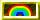 | If you destroy a brick with no bonus assigned it will release 1000 points extra score! |
| Expand Paddle | - | | Expands your paddle about one tile (the maxium size depends on the chosen difficulty level). |
| Extra Life | - | 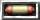 | Gives you one extra life (paddle). |
| Sticky Paddle | 20 | 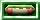 | Balls touching the paddle will keep attached until you press fire. |
| Energy Balls | 5 | Balls won't be reflected at a brick but go directly through it. | |
| Extra Ball | - | | Creates a new ball. |
| Bonus floor | 10 | | Closes the screen so no balls can get lost. |
| Weapon | 5 | 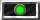 | Adds a weapon to the paddle. |
| Speed Down | 20 | Deccelerates all balls to mimum speed. | |
| Joker | - | | Collects all bonus on screen instantly and destroys all penalties. Doubles score and time of the collected bonus! |
| Explosive Balls | 10 | | When hitting a brick balls will cause an explosion destroying all surounding bricks. |
| Bonus Magnet | 20 | | While this bonus is active the paddle will attract other bonuses. |
| Reset | - | 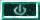 | All active bonuses and penalties will be reset. |
| Time-Add | - | | All active bonuses and penalties will last seven seconds longer. |
| Random Extra | - | 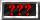 | Gives you any of the listed extras. |
| Speed Up | 20 | | Accelerates all balls to maximum speed. |
| Frozen Paddle | 1 | 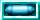 | Freezes the paddle (no movement possible). |
| Shrink Paddle | - | | Shrinks your paddle about one paddle tile (18 pixels). |
| Lights Out! | 20 | | Total darkness. All you see is a shade of paddle, balls and extras. |
| Chaos | 20 | Balls are reflected randomly at bricks. (but not at paddle) | |
| Ghostly Paddle | 20 | 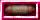 | Paddle disappears when not moving and won't reflect any balls then. (nor does it collect bonuses) |
| Penalty Magnet | 20 | While this penalty is active the paddle will attract other penalties. | |
| Weak Balls | 10 | 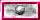 | With this penalty active there is a 40% chance that a ball won't damage a brick. |
| Name | Picture | Description |
| Shielded Brick | 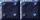 | This brick is indestructible even for energy balls. |
| Metal Brick |  | This wall is indestructible except for energy balls. |
| Chaotic Brick |  | Similiar to the Chaos Penalty the ball is reflected randomly at such a brick. |
| Strong Brick |  | These walls take up to three shots before destruction and grow darker with every hit. NOTE: to this series belongs a forth brick which is invisbile. |
| Regenerating Brick | 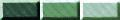 | This brick will regenerate one point durability within four seconds if not hit again. |
| Explosive Brick | This bricks destroys its neighbors on destruction. | |
| Growing Brick |  | If this brick is destroyed it creates up to 8 new bricks. |
| There are some predefined keys for LBreakout: | |
| h or F1 | Display quick help. |
| Escape | Quit LBreakout (after confirmation). |
| p | Pause game. |
| r | Restart level. If more than player the next one will get his chance before this player may play the restarted level! |
| w | Warp to next level after required percentage of bricks was cleared.
As soon as this is possible a blinking icon will appear at the bottom right-hand side of the screen:
 . This option can be set in menu Advanced Options. It does
only apply to AddOn levelsets as it is meant as a workaround for bad leveldesign. . This option can be set in menu Advanced Options. It does
only apply to AddOn levelsets as it is meant as a workaround for bad leveldesign. |
| d | Switch to the Plane Of Inner Stability and disintegrate single bricks. Again, this only works in AddOn levelsets to remove bricks that are hard to hit. |
| f | Switch Fullscreen and Windowed mode. |
| a | Change animation level (off/low/high). |
| s | Turn on/off sound. |
|
You can play LBreakout2 against another human via network. Therefore you'll have
to connect to a server or run a server and have your friends connected. Start A Server After you started the program lbreakout2server with any of the following options
Playing How to play is explained in the in-game help accessable via the 'Help' button at the bottom right-hand side in the network chatroom. New Playing Grounds You can build new levelsets combining pingpong and normal ones. Such a levelset must start with 'N_'. An 'upload' command is planned but right now the only way to make a new levelset available is to copy it to the server's levelset directory (default: /usr/local/share/games/lbreakout2/levels) and restart the server. |
| All files you edit are saved to ~/.lbreakout2/levels. This '~' you see in front of the name when choosing levelset for playing is not part of the file name but added afterwards to separate the files in the installation path from the files in the config path (these you may edit). |
 |
Actions like quit, save, load, clear, add, insert, remove require a confirmation for safety.
|
| Very simple. Select a brick or a bonus by left-click (right-click into the section to switch between the brick and the bonus set) from the bottom of the screen (red-yellow selection frame) go to the editable part and left-click. Right click will remove a brick (any brick and its bonus if a brick's selected) or bonus (any bonus without touching the brick if bonus selected). You may move the mouse while having left or right buttom pressed. To parse/add/remove any levels or save/load this set use the buttons as explained above. You may use the cursor keys, too (UP - first level, RIGHT - next level, LEFT - previous level). Pressing ESCAPE leaves the editor after confirmation. |
|
If you want to run LBreakout2 with other graphics and sounds you can create a theme which allows you to modify all game graphics and sounds. The use of new backgrounds is also allowed. The following list contains all editable graphics and sounds. What you have to do to edit them is explained below. Editable graphics:
Editable sounds:
|
|